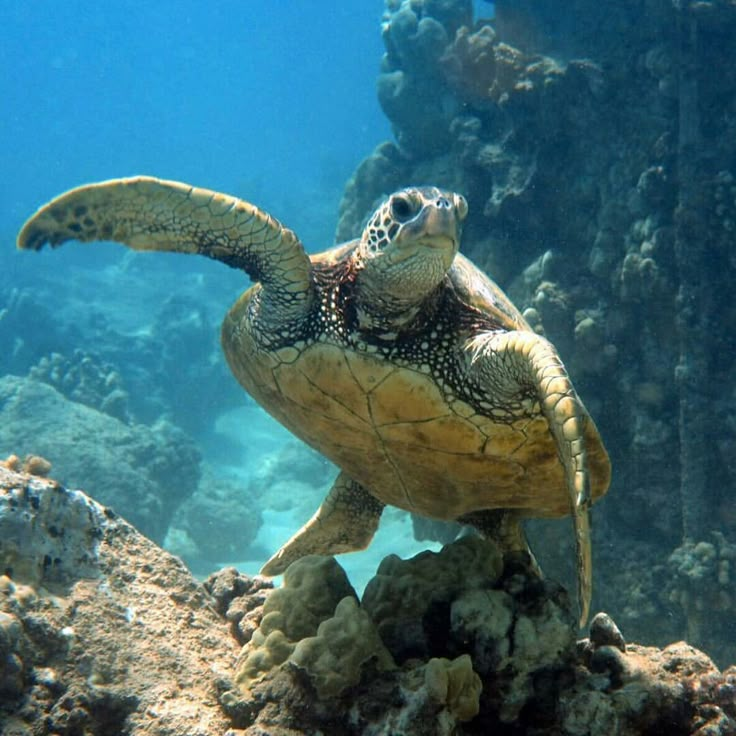
Penyu LautChelonioidea
Penyu laut adalah reptil laut purba yang memegang peran penting dalam menjaga keseimbangan ekosistem pesisir dan terumbu karang di Indonesia. Satwa yang dilindungi ini secara berkala akan bermigrasi ribuan kilometer dan kembali ke pesisir pantai berpasir yang sama hanya untuk bertelur.
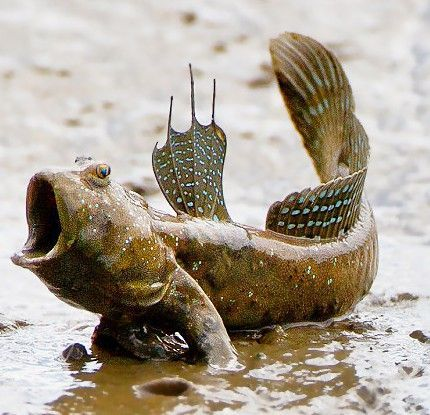
Ikan TembakulPeriophthalmus sp.
Ikan tembakul adalah ikan unik penghuni hutan mangrove pesisir Indonesia yang memiliki kemampuan adaptasi luar biasa untuk berjalan dan bertahan hidup di darat. Hewan amfibi ini menggunakan sirip dadanya seperti kaki untuk melompat di atas lumpur dan bernapas melalui kulitnya saat air laut surut.
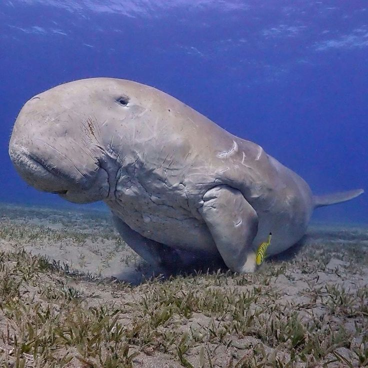
DugongDugong dugon
Dugong adalah mamalia laut herbivora dilindungi yang menghabiskan seluruh hidupnya di perairan dangkal pesisir Indonesia untuk memakan rumput laut (lamun). Satwa unik yang sering dijuluki "sapi laut" ini memiliki peran ekologis penting dalam menjaga kesehatan dan kesuburan ekosistem padang lamun.
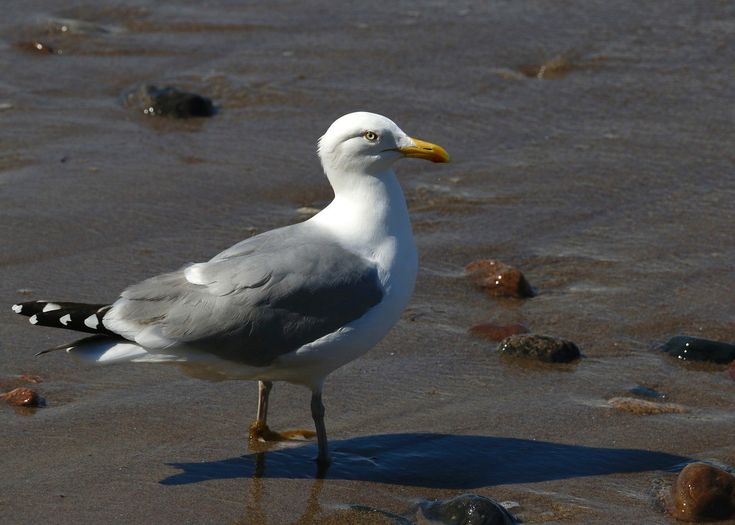
Burung Camar LautLarus
Burung camar laut adalah burung pesisir yang sangat tangkas terbang tinggi dan terkenal sebagai penerbang ulung di sepanjang garis pantai Indonesia. Burung pemangsa ini hidup berkelompok dan mengandalkan penglihatan tajamnya untuk berburu ikan kecil atau sisa makanan di permukaan air laut.
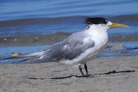
Dara-Laut JambulThalasseus bergii
Dara-laut jambul adalah burung air pesisir yang mudah dikenali dari jambul hitam khas di kepalanya dan paruh kuningnya yang mencolok. Burung penetap dan migran di Indonesia ini dikenal sebagai pemburu ulung yang meluncur cepat dari udara untuk menyambar ikan di permukaan laut.
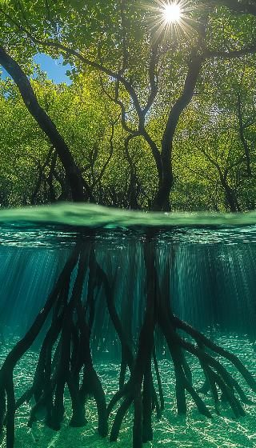
BakauRhizophora
Bakau adalah jenis tanaman khas hutan mangrove yang tumbuh di kawasan pasang surut air laut dengan ciri utama berupa akar tunjang yang kuat dan mencuat ke permukaan tanah. Akar khusus ini berfungsi menopang pohon di atas lumpur labil, menyerap oksigen saat pasang, sekaligus memecah energi gelombang untuk melindungi pesisir dari ancaman abrasi. Selain menjaga stabilitas garis pantai, ekosistem bakau juga menjadi tempat memijah biota laut, penyaring polutan alami, dan penyimpan karbon yang sangat efektif.
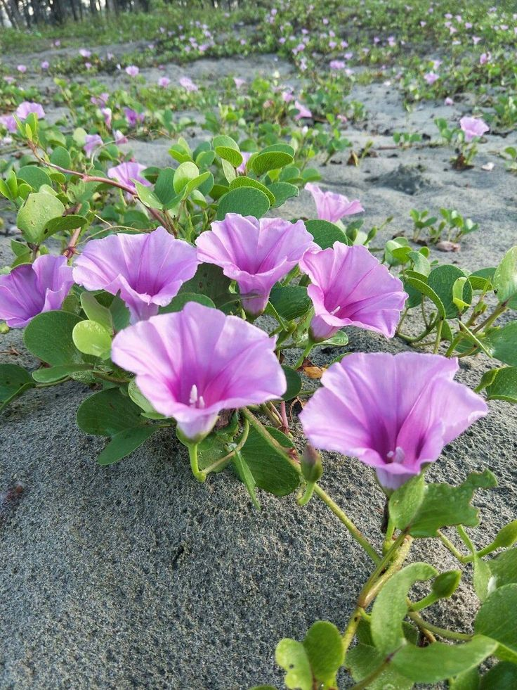
Tapak KudaIpomoea pes-caprae
Tapak Kuda adalah tanaman menjalar pesisir yang tumbuh subur di sepanjang pantai berpasir dengan ciri khas daun tebal berlekuk yang menyerupai bentuk cetakan kaki kuda. Tumbuhan penutup tanah ini memiliki batang yang menjalar sangat panjang, berakar pada tiap ruasnya, dan menghasilkan bunga berbentuk terompet berwarna ungu cerah yang kontras dengan pasir pantai. Karena pertumbuhannya yang cepat dan jaringannya yang rapat, tapak kuda memiliki peran ekologis krusial sebagai pengikat pasir pantai guna mencegah erosi akibat angin laut dan hempasan ombak.
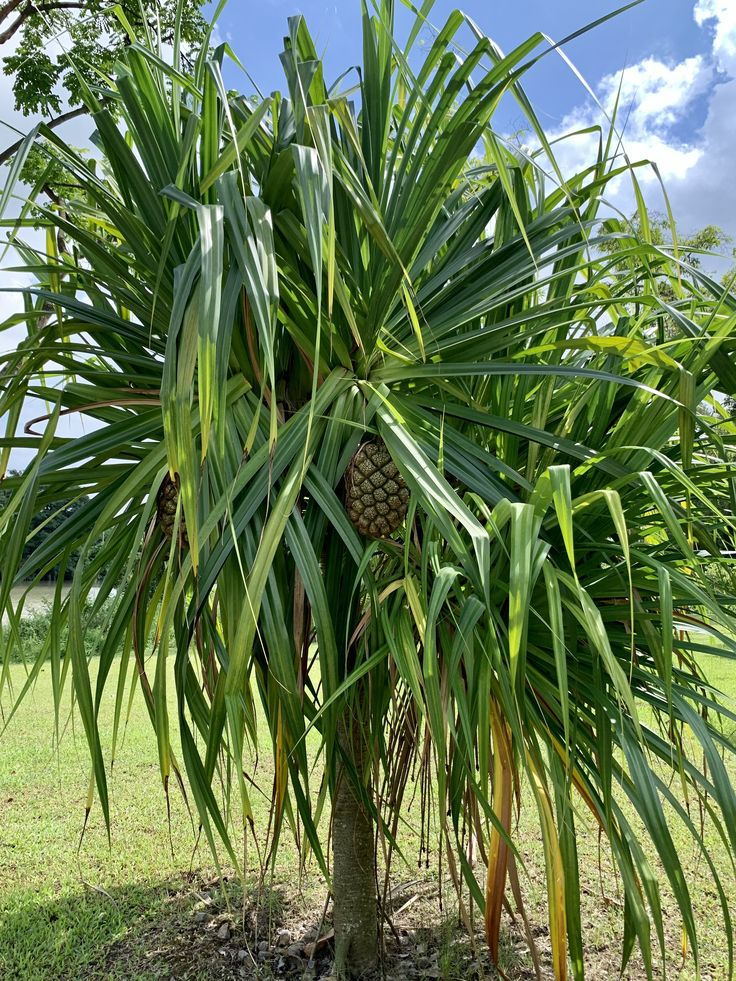
Pandan LautPandanus tectorius
Pandan Laut adalah tumbuhan pesisir berbentuk semak atau pohon bercabang banyak yang khas dengan deretan akar tunjang kuat untuk menopang batangnya di atas pasir pantai. Tanaman ini memiliki daun panjang, kaku, dan berduri di sepanjang tepinya yang tumbuh berkumpul membentuk roset di ujung cabang, serta menghasilkan buah bulat besar berwarna jingga kemerahan saat matang yang mirip buah nanas. Secara ekologis, pandan laut berfungsi sebagai penahan angin laut (windbreak) dan pelindung erosi pantai, sementara daunnya sering dimanfaatkan oleh masyarakat pesisir sebagai bahan baku anyaman kerajinan tradisional.
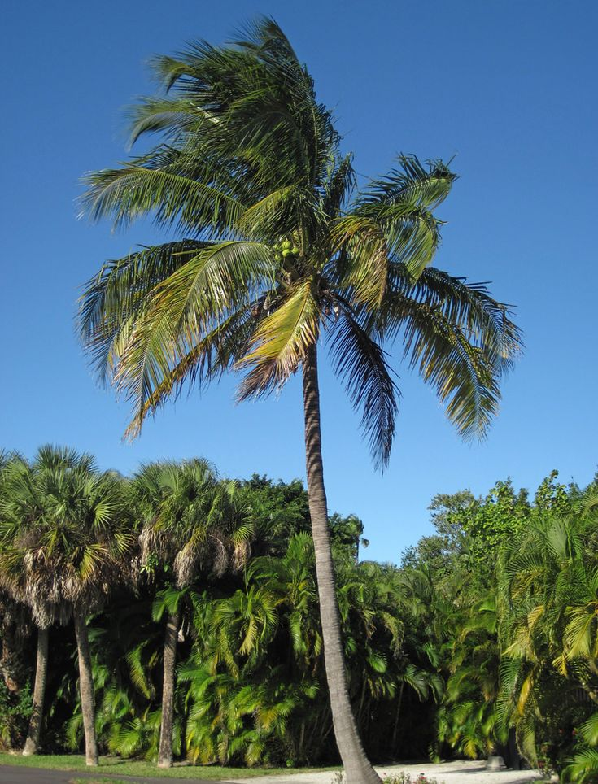
KelapaCocos nucifera
Kelapa adalah pohon palem berbatang tunggal dan tinggi yang menjadi ikon utama wilayah pesisir tropis karena kemampuan adaptasinya yang luar biasa terhadap tanah berpasir dan angin kencang. Tanaman serbaguna ini memiliki sistem perakaran serabut yang sangat kuat untuk mencengkeram pantai serta buah berongga sabut yang mampu terapung berbulan-bulan di laut lepas untuk menyebar ke daratan baru. Dikenal sebagai "pohon kehidupan", setiap bagian kelapa memiliki nilai ekonomi tinggi, mulai dari air dan daging buahnya sebagai pangan, batangnya untuk konstruksi, hingga daunnya untuk kerajinan.
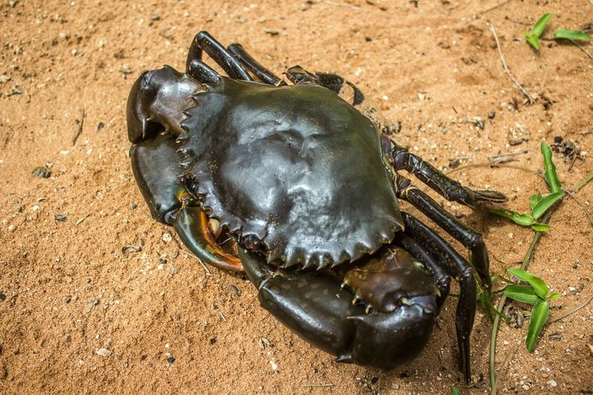
Kepiting BakauScylla serrata
Kepiting bakau adalah krustasea bernilai ekonomi tinggi yang mendiami kawasan hutan mangrove dan estuari di sepanjang pesisir Indonesia. Hewan bercangkang keras ini memiliki sepasang capit yang sangat kuat untuk merobek makanan dan menggali lubang di lumpur sebagai tempat perlindungan.
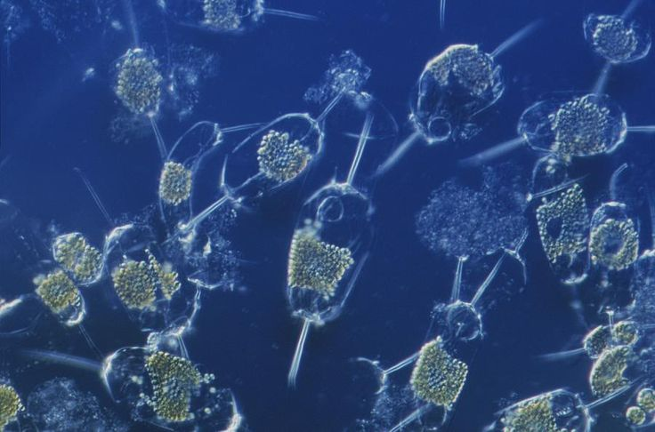
Fitoplankton...
Fitoplankton adalah mikroorganisme autotrof menyerupai tumbuhan yang hidup melayang di lapisan permukaan perairan laut maupun tawar yang terjangkau oleh cahaya matahari. Meski berukuran mikroskopis, organisme bersel tunggal ini memegang peran krusial sebagai produsen primer utama yang mendasari seluruh jaring-jaring makanan di ekosistem perairan. Melalui proses fotosintesis menggunakan klorofil, fitoplankton tidak hanya menjadi sumber pangan bagi zooplankton dan ikan kecil, tetapi juga bertindak sebagai paru-paru bumi global karena mampu menyerap karbon dioksida secara masif sekaligus menyumbang lebih dari 50 persen oksigen di atmosfer.
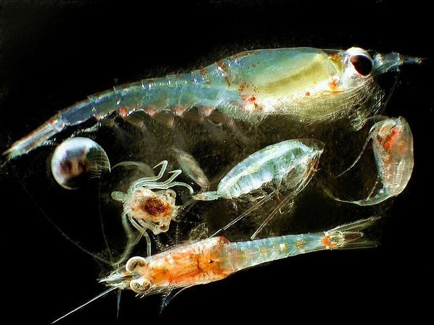
Zooplankton...
Zooplankton adalah kelompok organisme heterotrof berukuran mikro hingga makro yang hidup melayang di kolom air dan pergerakannya sangat dipengaruhi oleh arus laut. Berbeda dengan fitoplankton, organisme ini tidak dapat berfotosintesis sehingga bertahan hidup dengan memakan fitoplankton, bakteri, atau sesama zooplankton yang berukuran lebih kecil. Dalam ekosistem pesisir dan laut, zooplankton memegang peran krusial sebagai jembatan energi yang menyalurkan nutrisi dari produsen primer ke tingkat trofik yang lebih tinggi, seperti larva udang, ikan, hingga paus raksasa.